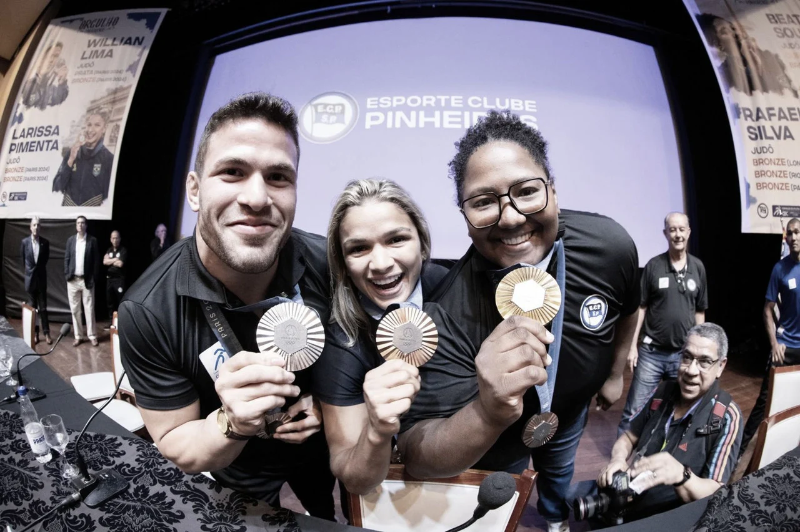

Um pouco sobre:
O judô é uma tradicional arte marcial japonesa derivada do jiu-jitsu, a técnica de combate corpo a corpo dos antigos guerreiros samurais. O Dr. Jigoro Kano é creditado como fundador da disciplina em Tóquio depois de abrir seu primeiro dojo (escola), o kōdōkan, em 1882. Em japonês, a palavra “judô” significa “o caminho suave”, mas o tradicional esporte de luta dificilmente pode ser descrito como tal, pois requer um esforço físico considerável. Dr. Kano combinou os princípios filosóficos do judô com métodos de educação física, intelectual e moral, ao mesmo tempo em que eliminou muitos dos aspectos mais perigosos do jiu-jitsu. O judô tornou-se popular na Europa e, particularmente na França, no fim do século 20, tornando-se a primeira arte marcial amplamente praticada fora do Japão.
os medalhistas brasileiros
Breve resumo das regras
O judô tem como objetivo derrubar o oponente, imobilizá-lo ou forçar uma finalização. A pontuação principal é o ippon, concedido por um golpe decisivo ou imobilização por 20 segundos, resultando na vitória imediata. O waza-ari é um ponto parcial, dado por um golpe menos eficaz ou imobilização entre 10 e 20 segundos; dois waza-aris equivalem a um ippon. As competições são divididas por categorias de peso e duram quatro minutos, com prorrogação em caso de empate, além de penalidades por falta de combate ou comportamento inadequado.